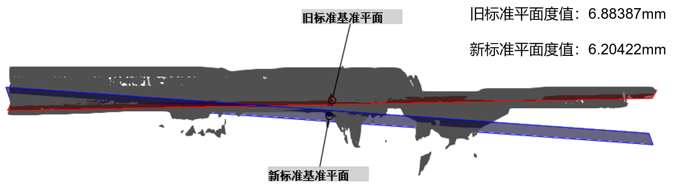
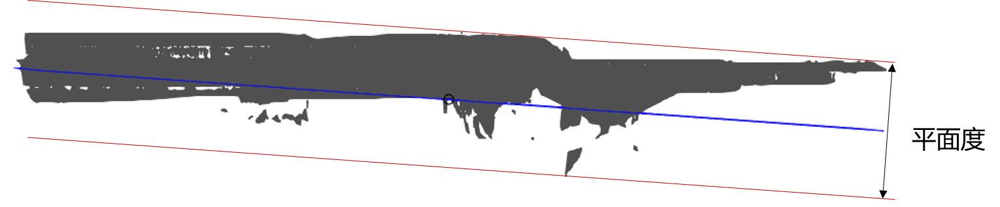
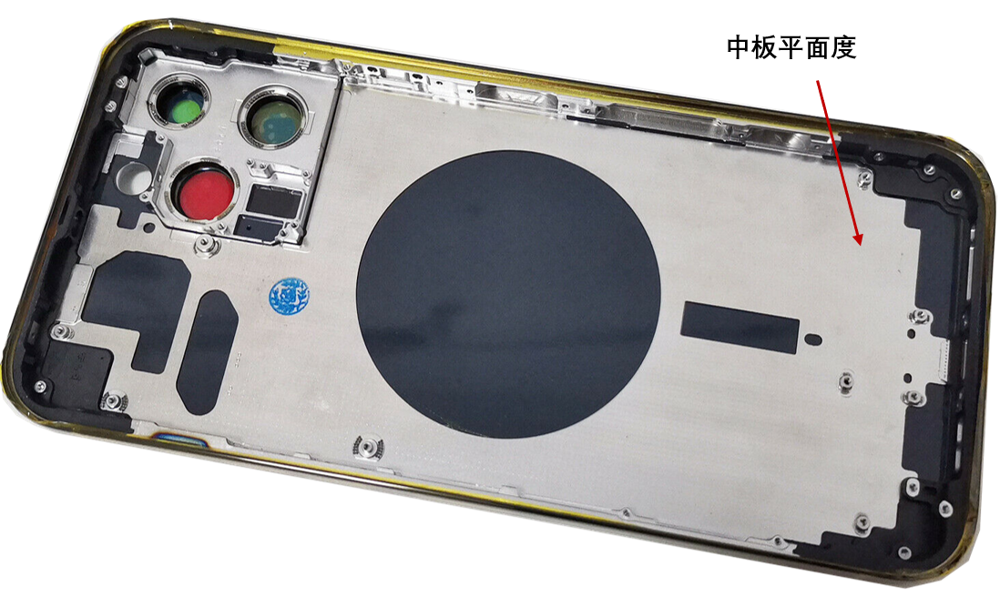
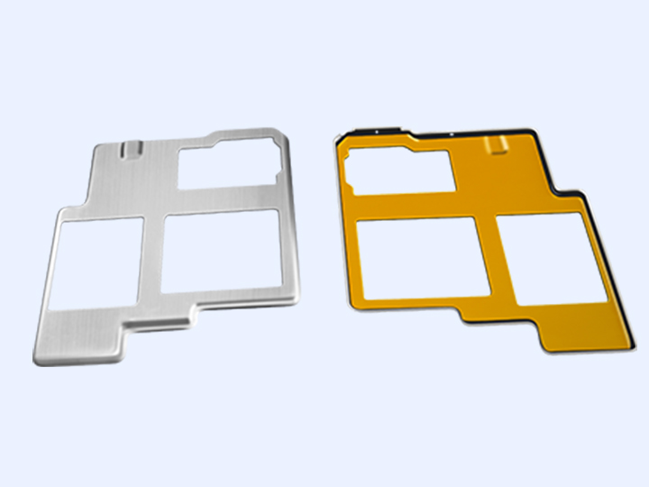
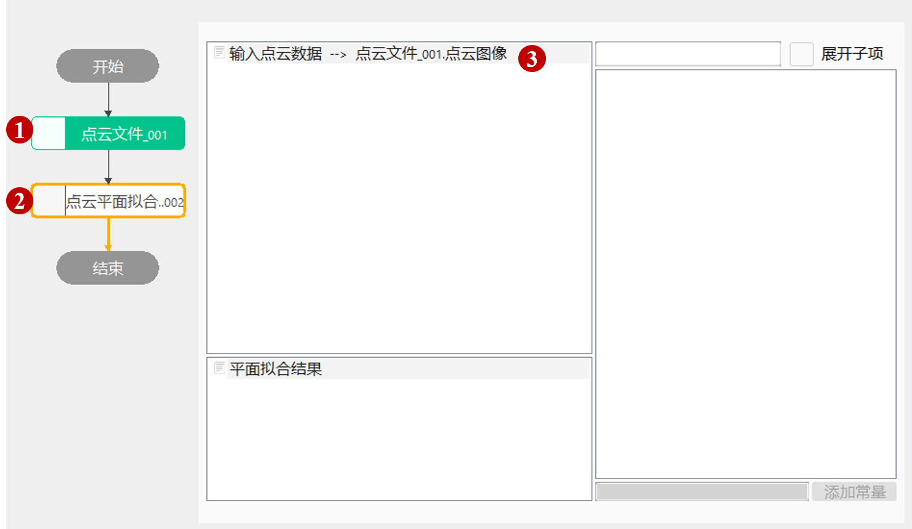
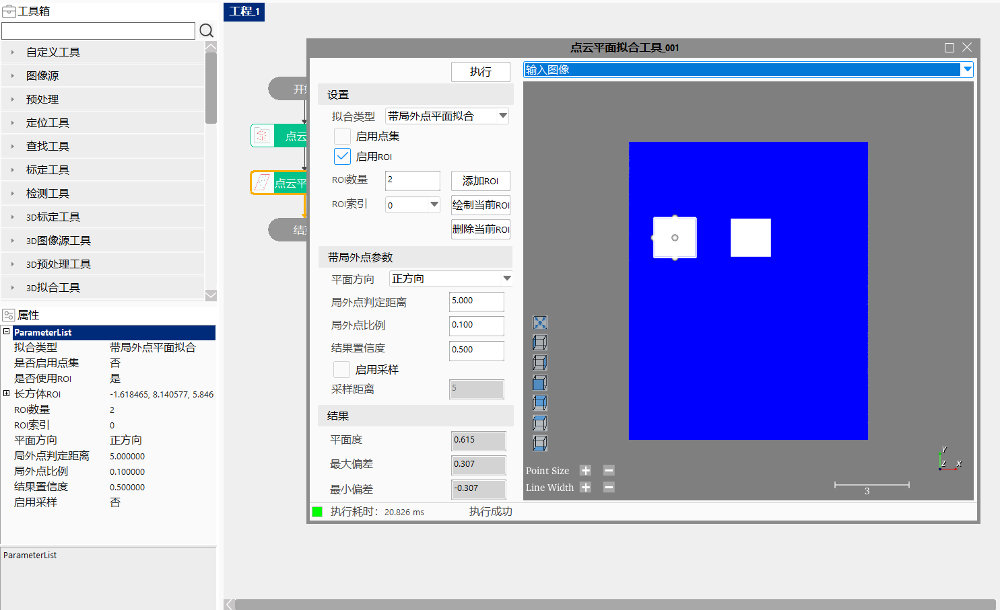
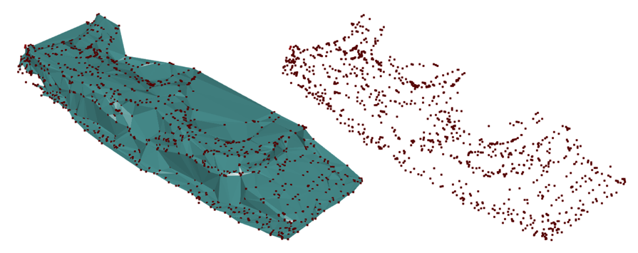
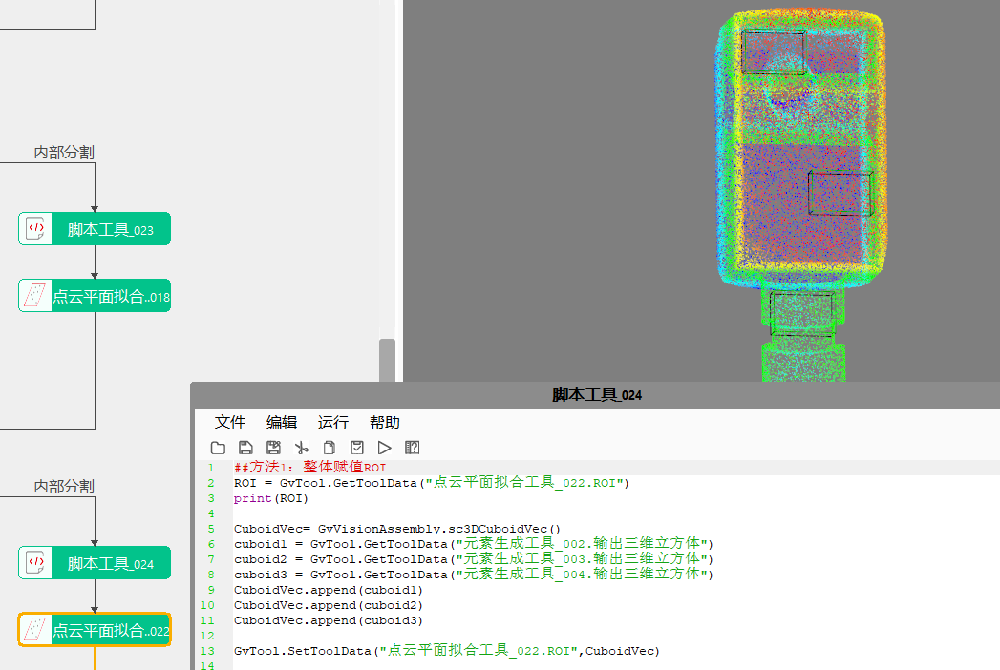
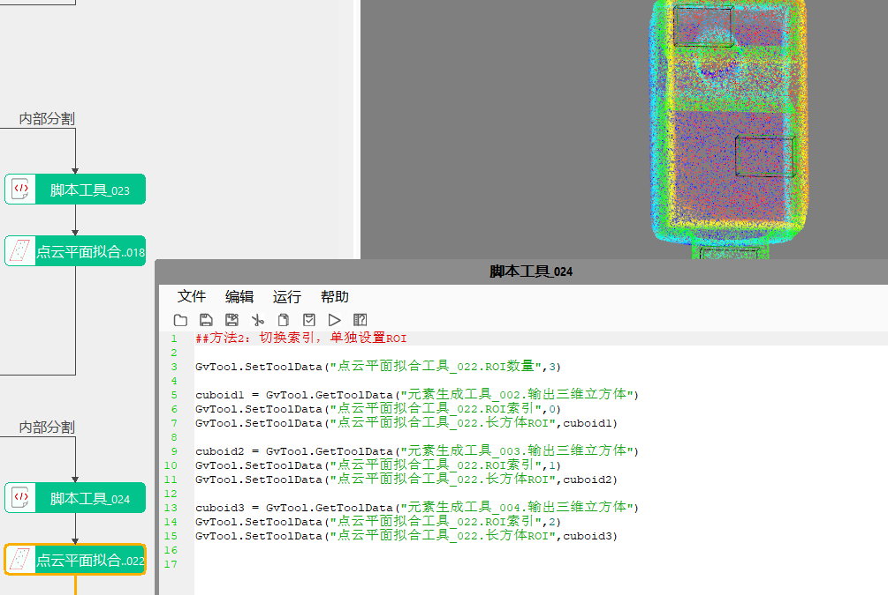

Trong các dự án đo chiều cao 3D, thường liên quan đến việc thực hiện phù hợp mặt phẳng hoặc đo độ phẳng trong một khu vực nhất định của sản phẩm. Công cụ này bao gồm 2 thuật toán phù hợp: phù hợp mặt phẳng có loại bỏ điểm ngoại lai và phù hợp mặt phẳng Chebyshev.
Công cụ phù hợp mặt phẳng có loại bỏ điểm ngoại lai chủ yếu loại bỏ các điểm ngoại lai trong hình ảnh, sau đó tính toán biểu thức giải tích của mặt phẳng 3D dựa trên dữ liệu điểm nội tại, để hỗ trợ các thao tác đo chiều cao tiếp theo. Phù hợp mặt phẳng Chebyshev dựa theo tiêu chuẩn mới GB/T 11337-2004, tiêu chuẩn đánh giá độ phẳng mặt phẳng cần thỏa mãn điều kiện bao hàm tối thiểu. Công cụ này thực hiện tính toán độ phẳng theo ý nghĩa của tiêu chuẩn mới.

Đo lường 3D - Đo độ phẳng mặt lắp pin của khung giữa điện thoại

Đo lường 3D - Đo độ phẳng mặt giữa điện thoại

Đo lường 3D - Đo chiều cao vỏ che chắn bo mạch chủ điện thoại

Bước 1: Thêm công cụ phù hợp mặt phẳng đám mây điểm, sau đó nhấp đúp để mở chuỗi tham số công cụ, liên kết tệp đám mây điểm, như hình 3-1;
Bước 2: Nhấp chuột phải vào công cụ và chọn “Thuộc tính” để mở giao diện nâng cao của công cụ, như hình 3-2;


| Tên tham số | Mô tả tham số |
|---|---|
| Dữ liệu đám mây điểm đầu vào | Nhập hình ảnh đám mây điểm cần phù hợp |
| Tập điểm đầu vào | Nhập tập điểm cần phù hợp |
| Tên tham số | Mô tả tham số |
|---|---|
| Loại phù hợp | Bao gồm hai loại: Phù hợp mặt phẳng có loại bỏ điểm ngoại lai, Phù hợp mặt phẳng Chebyshev |
| Có bật tập điểm hay không | Chọn “Có”, thì thực hiện phù hợp mặt phẳng theo tập điểm đầu vào; chọn “Không”, thì thực hiện phù hợp mặt phẳng theo đám mây điểm đầu vào |
| Có bật ROI hay không | Chọn “Có”, thì sử dụng khung ROI hình hộp chữ nhật để thực hiện phù hợp; chọn “Không”, thì thực hiện phù hợp mặt phẳng trên toàn bộ đám mây điểm |
| Số lượng ROI | Trong trường hợp bật ROI, dùng để thiết lập số lượng ROI, phạm vi: [1,50] |
| Chỉ số ROI | Dùng để chuyển đổi giữa các chỉ số khác nhau |
| Số lần lặp tối đa | Dành riêng cho phù hợp mặt phẳng Chebyshev, dùng để ngăn chặn tình trạng thuật toán bên trong công cụ bị timeout nghiêm trọng khi nhập điểm đặc biệt. Đối với mặt phẳng thông thường, dùng giá trị mặc định; phạm vi [10,10000] |
| Có bật độ chính xác cao hay không | Dành riêng cho phù hợp mặt phẳng Chebyshev, dùng cho trường hợp số lượng đám mây điểm không lớn và phân bố không phải mặt phẳng; nếu bật, số lần lặp tối đa cần thiết lập trên 100 và thời gian tiêu tốn ít nhất tăng gấp đôi |
| Hướng mặt phẳng | Dành riêng cho phù hợp mặt phẳng có loại bỏ điểm ngoại lai, chia thành hai loại: hướng dương và hướng âm |
| Khoảng cách phán đoán điểm ngoại lai | Dành riêng cho phù hợp mặt phẳng có loại bỏ điểm ngoại lai, giá trị khoảng cách tối đa từ điểm dữ liệu tham gia phù hợp đến mặt phẳng phù hợp, phạm vi: (0,1000] |
| Tỷ lệ điểm ngoại lai | Dành riêng cho phù hợp mặt phẳng có loại bỏ điểm ngoại lai, tỷ lệ điểm ngoại lai chiếm tổng điểm dữ liệu chiều sâu, phạm vi: [0,1) |
| Độ tin cậy kết quả | Dành riêng cho phù hợp mặt phẳng có loại bỏ điểm ngoại lai, đo lường mức độ tin cậy khi sử dụng điểm nội tại để xây dựng mặt phẳng phù hợp. Độ tin cậy càng lớn, mặt phẳng phù hợp càng đáng tin cậy, phạm vi: (0,1) |
| Bật lấy mẫu | Dành riêng cho phù hợp mặt phẳng có loại bỏ điểm ngoại lai, có thực hiện lấy mẫu phù hợp hay không. Chọn “Có” thì hiển thị tham số bán rộng lấy mẫu |
| Khoảng cách lấy mẫu | Dành riêng cho phù hợp mặt phẳng có loại bỏ điểm ngoại lai, lấy mẫu cách nhau bao nhiêu, rút ngắn thời gian phù hợp mặt phẳng, phạm vi: (0,50] |
| Bật tính toán song song | Có bật tính toán song song hay không. Khi chọn Có, thuật toán sẽ bật chế độ tính toán song song OpenMp, có thể tăng tốc độ tính toán nhưng có thể xuất hiện tình trạng thời gian không ổn định. Khi chọn Không, thuật toán sẽ tắt tính toán song song OpenMp |
| Tỷ lệ số luồng | Thiết lập tỷ lệ số luồng cho tính toán song song, phạm vi hiệu quả (0, 0.75], tương ứng với phạm vi phần trăm (0%, 75%] |
| Xuất mặt phẳng hình chữ nhật 3D | Chọn “Có”, thì dựa trên tập điểm đầu vào xuất ra mặt phẳng hình chữ nhật 3D, tức là hiển thị kích thước tự thích ứng |
Tham số giao diện nâng cao giống với tham số cửa sổ thuộc tính, các nút tương tác như sau:
| Tên nút | Mô tả tham số |
|---|---|
| Thêm ROI | Trong hình ảnh giao diện nâng cao, tự động thêm ROI hình hộp chữ nhật |
| Vẽ ROI hiện tại | Trong hình ảnh giao diện nâng cao, nhấp và kéo chuột tại vị trí tương ứng để vẽ ROI hình hộp chữ nhật dưới chỉ số hiện tại |
| Xóa ROI hiện tại | Trong hình ảnh giao diện nâng cao, nhấp và kéo chuột tại vị trí tương ứng để xóa ROI hình hộp chữ nhật dưới chỉ số hiện tại |
| Tên tham số | Mô tả tham số |
|---|---|
| Hình ảnh đám mây điểm đầu ra | Hiển thị hình ảnh đám mây điểm cần phù hợp |
| Kết quả phù hợp mặt phẳng | Xuất mặt phẳng 3D đã phù hợp |
| Tên tham số | Mô tả tham số |
|---|---|
| Hình ảnh đám mây điểm đầu ra | Hiển thị hình ảnh đám mây điểm cần phù hợp; |
| Kết quả phù hợp mặt phẳng | Mặt phẳng 3D: Điểm mặt phẳng, điểm 3D mà mặt phẳng phù hợp đi qua Mặt phẳng 3D: Vector pháp tuyến, vector pháp tuyến của mặt phẳng phù hợp Mặt phẳng 3D: Độ lệch, độ lệch của mặt phẳng phù hợp so với mặt phẳng zero Mặt phẳng 3D: Góc nghiêng, góc giữa vector pháp tuyến mặt phẳng phù hợp và trục Z Mặt phẳng 3D: Góc xoay, góc giữa vector chiếu của vector pháp tuyến mặt phẳng phù hợp trên mặt phẳng XOY và trục X |
| Độ phẳng | Độ phẳng của mặt phẳng đầu ra, tức là độ lệch tối đa trừ độ lệch tối thiểu |
| Độ lệch tối đa | Giá trị độ lệch tối đa |
| Độ lệch tối thiểu | Giá trị độ lệch tối thiểu |
| Kết quả phù hợp mặt phẳng hình chữ nhật 3D | Dựa trên tập điểm đầu vào xuất ra mặt phẳng hình chữ nhật 3D, tức là sau khi chiếu tập điểm lên mặt phẳng phù hợp, tính toán và xuất ra mặt phẳng hình chữ nhật 3D ngoại tiếp tối thiểu của tập điểm chiếu |
| Kết quả thực thi | Kết quả thực thi công cụ |
| Thời gian thực thi | Thời gian thực thi công cụ |
Xem “\Samples\3D\Đám mây điểm\Công cụ thước kẹp đám mây điểm.gvp”.
Công cụ phù hợp mặt phẳng có loại bỏ điểm ngoại lai chủ yếu dựa trên khung thuật toán RANSAC, thông qua thiết lập ngưỡng khoảng cách, độ tin cậy và tỷ lệ điểm ngoại lai để thu được mặt phẳng thứ ưu, sau đó sử dụng phương pháp tìm kiếm tối ưu lặp lại trên mặt phẳng thứ ưu để thu được kết quả mặt phẳng phù hợp tối ưu nhất.
Khoảng cách phán đoán điểm ngoại lai ：Chỉ giá trị khoảng cách tối đa từ điểm thiết lập đến mặt phẳng phù hợp；
Điểm ngoại lai ：Chỉ các điểm dữ liệu chiều sâu có khoảng cách đến mặt phẳng phù hợp không thỏa mãn ngưỡng khoảng cách；
Tỷ lệ điểm ngoại lai ：Tỷ lệ điểm ngoại lai chiếm tổng điểm dữ liệu chiều sâu, trong đó tổng điểm nội tại và điểm ngoại lai bằng tổng điểm dữ liệu chiều sâu；
Độ tin cậy kết quả ：Đo lường mức độ tin cậy khi sử dụng điểm nội tại để xây dựng mặt phẳng phù hợp. Độ tin cậy càng lớn, mặt phẳng phù hợp càng đáng tin cậy.
Số lần lặp tối đa ：Số lần tính toán lặp lại tối đa bên trong công cụ để chọn tối ưu (dùng để ngăn chặn tình trạng thuật toán bên trong công cụ bị timeout nghiêm trọng khi nhập điểm đặc biệt) mặc định là 50. Đối với đám mây điểm đo mặt phẳng thông thường, sử dụng tham số mặc định là được. Thiết lập số lần lặp ≥1；
Chế độ tính toán độ chính xác cao ：Sau khi bật, công cụ sẽ tìm kiếm nghiệm tối ưu toàn cục （dùng cho trường hợp số lượng đám mây điểm không lớn và phân bố không phải mặt phẳng）mặc định không bật. Đối với đám mây điểm phân bố呈现 trạng thái mặt phẳng, sử dụng tham số mặc định là được；nếu bật chế độ tính toán độ chính xác cao, khuyến nghị thiết lập số lần lặp tối đa trên 100, sau khi bật thời gian tiêu tốn ít nhất tăng gấp đôi.

Giải thích thiết lập ROI phù hợp mặt phẳng cho script
1、Gán giá trị ROI cho script：ROI chỉ tập hợp ROI phù hợp mặt phẳng；

2、Gán giá trị ROI hình hộp chữ nhật cho script：ROI hình hộp chữ nhật chỉ ROI dưới chỉ số hiện tại；
